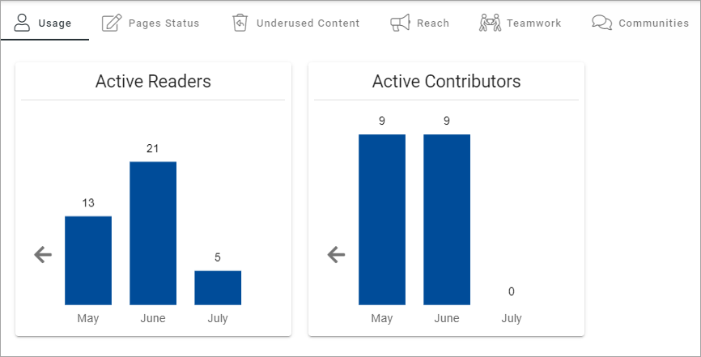
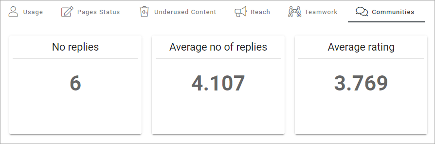
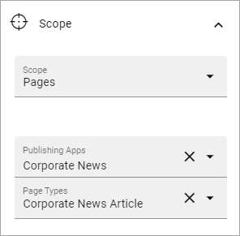
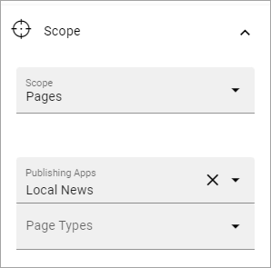
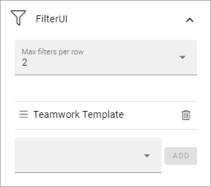
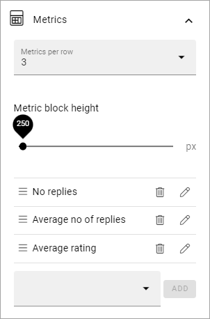

Dashboard implementation example¶
This page is being updated. Will be finished soon.
Here’s an example of a Dashoboard set up:
Under Usage, information about active readers and active contributors are shown. What should be considered an active reader or an active contributor is defined in the Metrics settings, see: Metric Settings
Under Page Status, something like the following is shown:

What you see in the example is the total status for the tenant. You can choose to see status for just one of the publishing apps and/or just one of the page types.
For Underused Content, something like the following can be shown:

What should be considered underused content is defined in the Metrics settings, see link above.
Regarding Reach: How well we reach our target audience based on what we expect. The metric can be configured to a specific scope of pages and have a target number of users.

For Teamwork, you can see the number of active teamworks and if any has been created this week or this month:

Finally, for Communities, the following information is shown:
How it’s done¶
The layout in this implementation example is a tab section with six tabs:

The settings for the tabs are similar. Here’s the first tab as an example:

For Style, “Show Active Slider” is selected so it’s clear which the active tab is:

On each tab a Metrics block is placed, with the following settings:
Usage: For this tab the Scope is set to “User Activity”, with the following Metrics:

Page Status: Here the setting for Scope is “Pages” with the following Metrics:

Underused Content: The Scope for this tab is also set to page, but this time with the following Metrics:

Reach: On the Reach tab, two Metrics blocks are added.
For the “Corporate News Reach”, the Scope is set this way:
And the Metrics, this way:

For the “Local News Reach”, the Scope is set this way:
And the Metrics, this way:

Teamwork: For this tab, the Scope is set to “Teamwork”, with three Metrics:

A filter is also added so you can choose the type of teamwork, based on template:
Communities: For the “Communites tab” Scope is set to Pages, and the Page Type “Discussion”:

And with the following Metrics:
